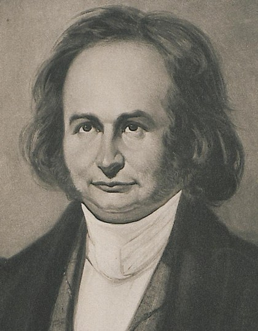
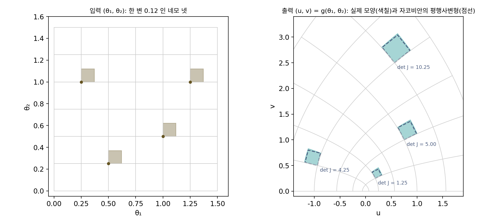
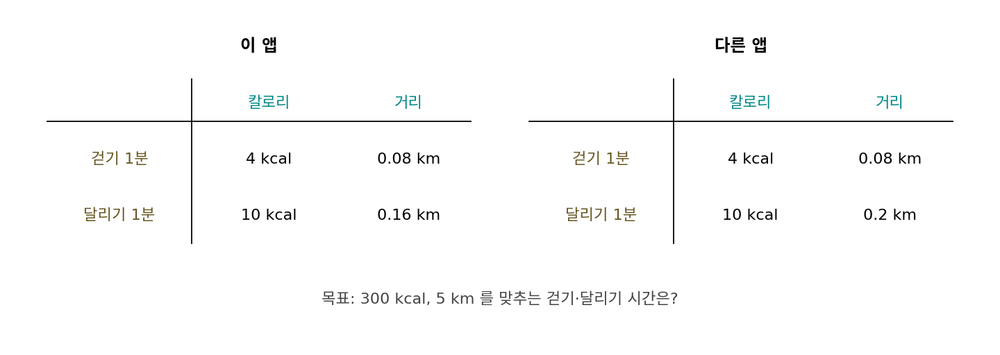
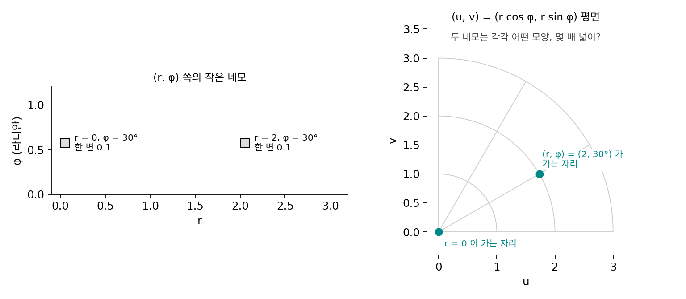
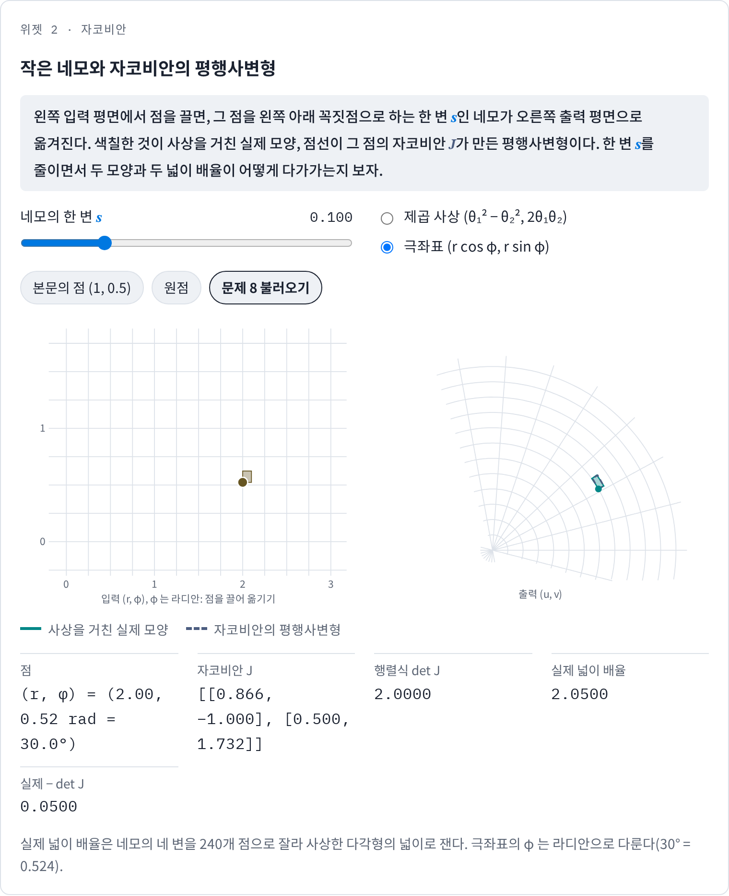
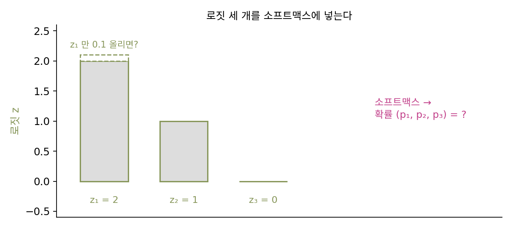

자코비안: 입력 여럿, 출력 여럿
손실처럼 숫자 하나를 내놓는 함수라면 그래디언트 하나로 「조금 움직이면 얼마나 바뀌는가」가 다 적힌다. 그러나 신경망의 층 하나는 숫자 여러 개를 내놓아서, 은닉층이 128칸이면 입력이 조금 바뀔 때 128개의 출력이 함께 바뀐다. 출력 하나하나마다 그래디언트를 따로 구할 수는 있지만, 그 그래디언트들을 어떻게 놓아야, 입력의 작은 움직임 하나가 출력 전체를 어떻게 옮기는지 한 번에 계산할 수 있을까? 그렇게 묶은 것은 출력 공간에서 어떤 모양으로 보일까?
역사: 야코비의 함수 행렬식

19세기 수학자들은 변수를 바꿔 적분하거나 여러 함수가 서로 기대는지 따질 때, 편미분들을 정사각형으로 늘어놓고 그 행렬식을 계산하는 일을 자주 했다. 이 계산의 성질을 처음으로 길게 정리한 사람이 독일의 카를 구스타프 야코프 야코비(Carl Gustav Jacob Jacobi)다. 그는 1841년 크렐레 학술지(Journal für die reine und angewandte Mathematik) 22권에 라틴어 논문 두 편을 나란히 실었는데, 그 가운데 「함수 행렬식에 대하여(De determinantibus functionalibus)」(319–359쪽)가 이 행렬식을 다뤘다. 그는 변수 n개의 함수 n개에서 만든 이 행렬식이 어디서나 0이면 그 함수들이 서로 기대고 있다는 것, 곧 그 가운데 하나가 나머지로 정해진다는 것을 보였다. 같은 논문에서 그는 편미분을 둥근 ∂로 적는 표기를 널리 썼는데, 괄호를 겹겹이 쌓아 편미분을 적는 당시 방식이 「읽는 이에게도 쓰는 이에게도 번거롭다」는 이유였다.
이 행렬식에 「야코비안(Jacobian)」이라는 이름을 붙인 사람은 영국의 제임스 조지프 실베스터(James Joseph Sylvester)로, 1852년 『케임브리지 더블린 수학 저널』에 처음 썼다. 지금은 행렬식뿐 아니라 편미분을 늘어놓은 행렬 자체도 이 이름으로 부르는데, 이 책은 「자코비안」으로 적는다.

행렬식이 0이면 함수들이 서로 기댄다는 건 지금은 det 한 번 돌려 보면 되잖아요.

한 점에서 돌리면 숫자 하나가 나오죠. 야코비가 다룬 건 「어디서나 0」일 때예요. 점 몇 개에서 0이 나왔다고 어디서나 0이라고 할 수 있나요?
아니요. 그러면 편미분을 식으로 구해서 행렬식을 식째로 전개해야겠네요. 변수가 셋이면… 항이 3!개라 여섯 개요.

넷이면 24개, 열이면 362만 8800개예요. 항 하나하나가 편미분 여러 개의 곱이고, 그 편미분도 다 손으로 구해야 했어요.

게다가 그때는 괄호를 겹겹이 쌓아 편미분을 적었다면서요. 적는 것부터 지쳤겠네요. 야코비가 ∂ 표기를 널리 쓴 게 괜한 일이 아니었어요.

그런데 행렬식은 숫자 하나잖아요. 행렬식으로 줄이기 전의 편미분 표는 한 점 근처에서 무엇을 보여 줘요?
제곱 사상이 작은 네모를 옮기는 모습
입력 둘, 출력 둘인 함수는 평면의 점을 평면의 다른 점으로 옮기는 규칙이라 그림으로 그릴 수 있다. 이런 규칙을 사상(입력 점을 출력 점으로 옮기는 규칙)이라 부른다. 가장 단순한 사상은 행렬을 곱하는 일차 사상인데, 그것은 어디서나 같은 모양으로 늘이고 돌리기만 해서 「자리마다 다르다」는 것을 보여 줄 수 없다. 그래서 일차가 아닌 것 가운데 식이 가장 짧은 축에 드는 제곱 사상 u = θ₁² − θ₂², v = 2θ₁θ₂를 골랐다. u와 v를 묶어 g(θ₁, θ₂) = (u, v)로 적자. 복소수를 아는 독자라면 θ₁ + iθ₂를 제곱하는 계산이다.
점 (1, 0.5)는 (0.75, 1)로 간다. 이 점에서 θ₁만 0.1 늘리면 출력은 대략 (0.2, 0.1)만큼, θ₂만 0.1 늘리면 대략 (−0.1, 0.2)만큼 움직인다. 각 출력을 각 입력으로 편미분하면 ∂u/∂θ₁ = 2θ₁ = 2, ∂u/∂θ₂ = −2θ₂ = −1, ∂v/∂θ₁ = 2θ₂ = 1, ∂v/∂θ₂ = 2θ₁ = 2이고, 위의 두 움직임은 이 네 숫자에 0.1을 곱한 것이다. 네 숫자를 출력마다 한 줄씩 쌓으면 2 × 2 행렬이 되고, 아무 방향의 작은 움직임 Δ에 대한 출력의 움직임은 이 행렬에 Δ를 곱한 것으로 근사된다. 실제로 (0.05, −0.02)만큼 움직이면 출력은 (0.1221, 0.0080)만큼 움직이고, 행렬로 근사한 값은 (0.12, 0.01)이다.
이렇게 출력 하나하나의 그래디언트를 한 줄씩 쌓은 행렬을 자코비안 (출력마다의 그래디언트를 줄로 쌓은 행렬 / Jacobian matrix)이라 하고 J로 적는다. 출력이 하나뿐이면 자코비안은 한 줄짜리, 곧 그래디언트를 가로로 눕힌 것이다.
자코비안이 출력 공간에서 어떤 모양으로 보이는지는 작은 네모 하나를 옮겨 보면 안다. (1, 0.5)에 한 변 0.1인 네모를 놓으면, 자코비안은 그 네모의 두 변을 (0.2, 0.1)과 (−0.1, 0.2)로 옮긴다. 네모가 이 두 변이 만드는 평행사변형이 되는 것이다. 평행사변형의 넓이는 처음 넓이에 행렬식 2 × 2 − (−1) × 1 = 5를 곱한 값이다. 실제로 사상을 거친 모양은 변이 조금 휜 네모인데, 그 넓이는 처음의 5.6267배다. 네모를 한 변 0.01로 줄이면 5.0603배가 되어 5에 다가간다. 네모가 작을수록 실제 모양이 평행사변형과 구별되지 않는 것은, 미분 가능성의 「확대하면 직선」이 출력이 둘일 때 「확대하면 평행사변형」이 된 것이다. 자코비안의 행렬식은 그 점 근처의 작은 넓이가 몇 배로 바뀌는지를 말한다.
원점에서는 자코비안의 네 칸이 모두 0이라서, 원점에 놓은 한 변 0.1 네모는 넓이가 0.0267배로 쪼그라든다. 행렬식이 0인 자리에서는 작은 네모가 납작하게 눌려, 그 근처에서 두 출력이 서로 독립적으로 움직이지 못한다. 야코비가 「행렬식이 0이면 함수들이 서로 기댄다」고 한 것을 한 점에서 본 모습이다.

ML에서: 층 하나의 자코비안
신경망의 층 하나 h = tanh(Wx + b)도 입력 여럿을 출력 여럿으로 옮기는 사상이다. 입력 셋, 출력 둘인 층으로 해 보자. 가중치 W는 씨앗을 고정해 뽑은 [[0.13, −0.13, 0.64], [0.10, −0.54, 0.36]], 편향은 0, 입력은 x = (0.5, −1, 2)다. 가중합은 (1.475, 1.310)이고 출력은 h = (0.9005, 0.8643)이다.
출력 h₁을 입력의 셋째 칸으로 미분하면, 가중합을 거쳐 W의 (1, 3) 칸 0.64가 나오고, tanh를 거치며 tanh의 미분 1 − h₁² = 0.1891이 곱해진다. 그래서 자코비안은 W의 줄마다 그 출력의 1 − h²를 곱한 diag(1 − h²) W이고, 숫자로는 [[0.0246, −0.0246, 0.1210], [0.0253, −0.1366, 0.0911]]이다. 편미분을 수치로 하나씩 구한 값과 넷째 자리까지 같으며, 모양은 출력 수 × 입력 수(2 × 3)이고 줄마다 그 출력의 그래디언트다. 눈여겨볼 것은 tanh가 1 가까이 차오른 출력일수록 1 − h²가 작아져 자코비안의 그 줄이 통째로 작아진다는 점이다. 여기서는 가중합 1.475가 tanh를 0.9 근처까지 밀어 올려 W의 첫째 줄이 0.19배로 줄었고, 가중합 1.310인 둘째 줄도 0.25배로 줄었다. 층을 여러 개 지날 때 이런 줄어듦이 어떻게 쌓이는지가 깊은 신경망을 학습할 때의 큰 걱정거리다.
문제 7. 운동 앱의 두 숫자
운동 앱이 걷기와 달리기 시간(분)을 받아 소모 칼로리와 이동 거리를 보여 준다. 1분에 걷기는 4 kcal와 0.08 km, 달리기는 10 kcal와 0.16 km라고 하자(설명을 위해 고른 값이다). (가) 이 앱의 자코비안(출력: 칼로리, 거리 / 입력: 걷기, 달리기)과 행렬식은? (나) 걷기를 10분 늘리고 달리기를 5분 줄이면 두 숫자는 어떻게 바뀌는가? (다) 다른 앱은 달리기를 1분에 0.2 km로 센다. 이 앱에서 「300 kcal, 5 km」를 맞추려면?


(가)는 줄이 칼로리, 거리니까 [[4, 10], [0.08, 0.16]], 행렬식은 4 × 0.16 − 10 × 0.08 = −0.16이에요. (나)는 행렬에 (10, −5)를 곱하면 칼로리 −10, 거리 0이에요. 거리는 그대로고 칼로리만 10 줄어요.
같은 앱에서 300 kcal, 5 km를 맞추려면 행렬 방정식을 풀면 돼. 걷기 12.5분, 달리기 25분이야.
다른 앱에서도 풀어 보세요.

[[4, 10], [0.08, 0.2]]로 풀면… 역행렬이 없대요. 행렬식이 0이에요.

이 앱은 걷기도 달리기도 1 km에 50 kcal로 세네. 그러면 거리는 언제나 칼로리 ÷ 50이야.
진짜? 몇 개 넣어 볼게. 30분 걷고 10분 달리든, 10분 걷고 18분 달리든, 55분 걷기만 하든 다 220 kcal, 4.4 km야.
그럼 300 kcal이면 거리는 300 ÷ 50 = 6 km로 정해지니까, 5 km는 어떤 시간으로도 못 맞춰.

행렬식이 0이라는 게 출력 쪽에서는 무슨 일이었죠?

입력 평면 전체가 출력 평면의 직선 하나(거리 = 칼로리 ÷ 50)로 눌린 거예요. 두 출력이 서로 기대고 있어서 사실상 숫자 하나뿐이에요. 야코비가 「행렬식이 0이면 함수들이 서로 기댄다」고 한 게 이거네요.

축구 게임에서 「슈팅」과 「슈팅 파워」가 늘 같은 비율로 같이 오르게 만들어 놓으면, 능력치 칸이 둘이어도 실제로 키울 수 있는 건 하나뿐인 거랑 같네.
문제 8. 극좌표의 넓이 배율
극좌표 (r, φ)를 평면의 점 (u, v) = (r cos φ, r sin φ)로 옮기는 사상이 있다(φ는 파이, 로마자로 phi). (가) r = 2, φ = 30°에서 자코비안과 행렬식은? (나) (r, φ) 쪽에서 한 변 0.1, 0.01인 네모를 옮기면 넓이가 몇 배가 되는가? (다) r = 0에서는? (풀어 본 뒤 위젯 2의 「문제 8 불러오기」로 확인해 보자.)

편미분부터 할게요. u = r cos φ, v = r sin φ를 r, φ로 미분하면 [[cos φ, −r sin φ], [sin φ, r cos φ]]이에요. 숫자로 [[0.866, −1], [0.5, 1.7321]]이고, 행렬식은 r(cos² + sin²) = 2예요.
(나)는 네모를 실제로 옮겨서 넓이를 재 볼게요. 한 변 0.1이면 2.05배, 0.01이면 2.005배예요. 작아질수록 2에 다가가요.
반지름과 각도만 바꾸는 사상인데, 넓이는 왜 두 배가 됐을까요?
각도를 0.1 바꾸면 반지름 2인 원 위에서는 호의 길이가 0.2만큼 움직여요. 반지름이 클수록 같은 각도 변화가 더 멀리 가니까, 넓이 배율이 반지름 r과 같아요.
r = 0.5, 1, 3에서 돌려 보니 정말 0.5, 1, 3이야.
r = 0이면요?

행렬식이 0이에요. 원점에서는 각도를 아무리 돌려도 점이 안 움직이니까 각도 쪽 변이 길이 0으로 눌려요. 그래서 극좌표로 적분할 때 넓이 요소에 r이 붙는 거였어요. 적분 시간에 외웠던 r dr dφ의 r이 자코비안의 행렬식이었네요.

피자를 같은 각도로 잘라도 바깥쪽 조각 끝이 넓잖아. 같은 각도 변화가 반지름이 클수록 넓이를 더 키우는 거네.
위젯 2에서 문제 8 설정을 불러와 네모가 옮겨 간 모양과 넓이 배율을 확인하고, 한 변을 0.01로 줄이거나 점을 r = 0 쪽으로 끌어 보세요.

문제 9. 소프트맥스의 자코비안
로짓(소프트맥스에 들어가기 전의 점수) z = (2, 1, 0)을 소프트맥스에 넣어 확률 p를 얻는다. (가) p와, p를 z로 미분한 3 × 3 자코비안을 구하라. (나) 자코비안의 각 줄을 더하면 얼마이고, 왜 그렇게 되는가? (다) 자코비안의 행렬식은?

p = (0.6652, 0.2447, 0.0900)이에요. p₁은 z₁에서 나오니까 자코비안은 대각선에만 숫자가 있겠죠. pᵢ(1 − pᵢ)를 대각선에 놓으면 될 것 같아요.
z₁만 0.1 올리면 p₂는 그대로인가요?
돌려 보니 p가 (0.0219, −0.0160, −0.0059)만큼 바뀌어요. p₂, p₃도 줄었어요. 분모에 모든 z가 들어 있어서 그렇구나. 대각선 밖도 0이 아니에요.
그럼 분모까지 넣어서 나눗셈 꼴로 미분해야겠다. 하나씩 해 보면… 대각선은 민준이 말대로 pᵢ(1 − pᵢ)인데, 대각선 밖에도 −pᵢpⱼ가 남아.
그걸 한꺼번에 쓰면?
diag(p) − ppᵀ야. 숫자로 [[0.2227, −0.1628, −0.0599], [−0.1628, 0.1848, −0.0220], [−0.0599, −0.0220, 0.0819]].
민준 학생이 돌린 값과 견줘 볼까요?
이걸 (0.1, 0, 0)에 곱하면 (0.0223, −0.0163, −0.0060)이라 셋째 자리까지 맞아요. 그리고… 줄마다 더하면 0이네요.
줄의 합이 0이라는 건, 입력을 어느 방향으로 움직이면 출력이 안 바뀐다는 뜻이죠?
(1, 1, 1) 방향이에요. 로짓에 모두 같은 수를 더하면 확률이 바뀌지 않아요.
z + 5를 넣어 봤는데 진짜 (0.6652, 0.2447, 0.0900) 그대로야.
그럼 (다)의 행렬식은요?
자코비안이 그 방향을 0으로 보내니까… 행렬식도 0이겠네요.
계산하면 1.6 × 10⁻¹⁸이 나오는데?
반올림 오차만 남은 거야. 확률은 합이 1이라 셋 가운데 둘만 정하면 나머지가 정해지는 것도 같은 얘기고요.
파이토치 코드에서 로짓에서 최댓값을 빼고 소프트맥스를 계산하던 게 이래서 안전했던 거네요. 같은 수를 빼도 답은 안 바뀌고 숫자만 작아지니까요.